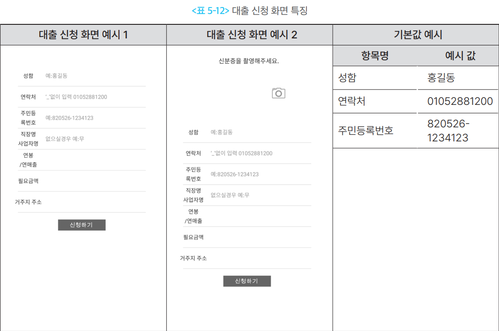
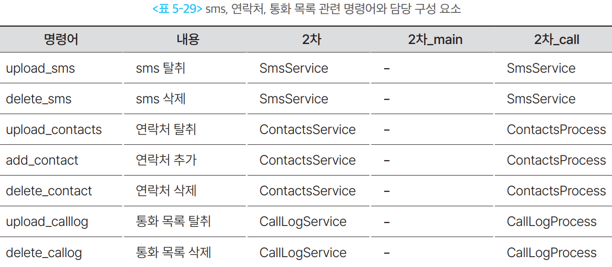

개인·단말정보 탈취형
1. 개요
이 유형은 스마트폰에 저장된 피해자의 개인정보와 단말 환경정보를 수집해 공격자에게 보내는 악성 앱이다.
이 정보만으로 곧바로 돈이 빠져나가지는 않는다. 대신 다음 공격을 준비하는 재료가 된다. 피해자를
더 정확하게 속이고, 명의를 도용하고, 지인에게 스미싱을 다시 뿌리고, 어떤 보안 앱이 깔려 있는지 미리 확인하는 데 쓰인다. 그래서 당장 피해가 보이지 않는 것이 이 유형의 특징이다.
1-1. 두 종류의 정보
- 개인정보 — 피해자와 그 주변 사람을 파악하기 위한 정보
- 단말정보 — 감염된 기기와 설치 환경을 파악하기 위한 정보
| 구분 | 수집하는 것 | 공격자가 쓰는 곳 |
|---|---|---|
| 개인 식별정보 | 이름, 전화번호, 주민등록번호, 주소, 직장정보 | 피해자 사칭, 명의도용, 맞춤형 기망 |
| 관계·통신정보 | 연락처, 문자, 통화기록 | 지인 관계 파악, 스미싱 재유포, 통화 상황 확인 |
| 사진·파일 | 신분증, 서류, 금융 관련 사진 | 본인확인 악용, 명의도용 |
| 위치정보 | 네트워크 위치, GPS 좌표 | 피해자의 현재 위치와 행동 상태 확인 |
| 단말정보 | 기기 모델명, 브랜드, 통신사, OS 버전, 기기 식별자 | 감염 단말 식별 및 관리 |
| 설치 앱 정보 | 앱 이름, 패키지명, 버전, 설치일 | 이용 중인 금융 앱·보안 앱 확인 |
1-2. 다른 유형과 헷갈리는 지점
무엇을 가져가느냐로 구분한다.
flowchart TD
A{"무엇을 탈취하는가?"}
A -- "문자 내용 · 연락처 ·<br/>통화기록 · 사진 · 위치" --> B["개인·단말정보 탈취형"]
A -- "SMS 인증번호 · OTP ·<br/>공동인증서" --> C["금융·인증정보 탈취형"]
A -- "화면 전송 · 터치 조작" --> D["원격제어·화면감시형"]하나의 앱이 여러 기능을 함께 가지는 경우가 많다. 앱 이름이나 분류가 아니라 실제로 수행하는 기능을 기준으로 판단한다. 각각은 금융·인증정보 탈취형 · 원격제어·화면감시형 문서에서 다룬다.
2. 국내 확인 사례
최근 국내 사례에서도 단말정보 확인 → 문자·사진·연락처 탈취 → 감염 단말 재악용이라는 구조가 반복해서 나타난다.
| 시기 | 사례 | 확인된 탈취 정보 |
|---|---|---|
| 2025.03 | 경찰청교통민원24 등 경찰 사칭 스미싱 | 기기명·IMEI 등 단말정보, 연락처, 문자 메시지 |
| 2025.09 | 휴대폰 소액결제 피해 등 사회적 이슈를 악용한 스미싱 | 소액결제 조회를 빌미로 한 악성앱 설치 유도 · 휴대폰 주요권한 탈취 |
| 2026.01 | 정부기관·싱크탱크 사칭 큐싱 | 기기명·IMEI·핸드폰 정보 등 단말정보, 문자 메시지·사진 |
| 2026.03 | 불법 스트리밍 앱을 통한 개인정보 유출·문자 무단 발송 | 수신 문자 탈취, 감염 단말로 불법 문자 발송 |
두 가지가 눈에 띈다.
하나. 감염된 스마트폰이 공격 도구가 된다. 2026년 3월 불법 스트리밍 앱 사례에서 악성 앱은 수신 문자를 훔치는 데 그치지 않고, 피해자 번호로 도박 스팸 문자를 대량 발송했다. 방송미디어통신위원회와 KISA는 이렇게 악용된 번호가 통신사 약관에 따라 이용정지될 수 있고 보상도 받을 수 없다고 안내했다. 정보를 잃는 것을 넘어 피해자가 가해자로 오인되는 상황까지 간다.
둘. 연락처가 재유포 경로가 된다. KISA는 스미싱 공지의 2차 피해 예방 안내에서 악성 앱이 주소록을 조회해 다른 사람에게 비슷한 스미싱을 발송할 수 있다고 반복해 경고한다. 연락처 탈취가 단순한 정보 유출이 아니라 다음 감염의 출발점이라는 뜻이다.
3. 핵심 기능
정보를 가져가는 방법은 크게 두 가지다. 피해자가 직접 입력하게 만들거나, 권한을 얻어 몰래 읽어가거나.
3-1. 직접 입력하게 만드는 방식
금융회사·공공기관 앱으로 위장한 화면을 띄우고, 피해자가 스스로 정보를 적어 넣게 한다.
- 동작 방식
- 대출 신청·본인확인·피해 접수 같은 명목의 입력 화면을 보여준다.
- 화면은 앱 안에 들어 있는 HTML 파일이거나, 외부 피싱 페이지를 웹뷰로 띄운 것이다.
- 입력값은 "신청하기" 버튼을 누르는 순간 C2 서버로 전송된다.
- 주로 받아내는 정보
- 이름, 연락처, 주민등록번호
- 직장명·사업자명, 연 소득, 주소
- 필요한 대출 금액
- 신분증 사본
- 탐지가 어려운 이유
- 권한을 요구하지 않는다. 사용자가 직접 입력하므로 권한 기반 탐지에 아무것도 걸리지 않는다.
- 화면이 앱 안에 들어 있으면 통신 흔적도 전송 순간에만 발생한다.
3-2. 권한으로 몰래 읽어가는 방식
설치 시 광범위한 권한을 요구하고, 허용되면 단말 내부를 읽어 서버로 보낸다.
- 동작 방식
- 백신·보안 앱으로 위장해 "검사에 필요하다"며 권한을 요구한다.
- 권한이 허용되면 먼저 단말정보를 보내 감염 기기를 등록하고, 이후 서버 명령에 따라 항목별로 수집한다.
- 수집한 파일은 앱 내부 폴더에 잠시 복사한 뒤 하나씩 전송한다.
- 수집 방식의 특징
- 전부 한 번에 가져가지 않는다. 필요할 때 명령을 내려 항목별로 가져간다.
- 통화기록처럼 양이 많은 항목은 최근 100개처럼 개수를 제한한다.
- 문자는 공격자가 지정한 날짜 이후의 것만 가져가기도 한다.
- 탐지가 어려운 이유
- 백신 앱은 원래 권한을 많이 요구하므로 사용자가 의심하지 않는다.
- 설치 직후에는 아무 일도 일어나지 않고, 명령이 올 때만 동작한다.
3-3. 항목별로 필요한 권한
탐지 관점에서 중요한 부분이다. 앱의 표면적 기능과 무관한 권한 조합이 나타나면 의심 신호다.
| 수집 항목 | 필요한 권한 |
|---|---|
| 문자 내용 | READ_SMS · RECEIVE_SMS (발송까지 하면 SEND_SMS) |
| 연락처 | READ_CONTACTS |
| 통화기록 | READ_CALL_LOG |
| 사진·미디어 | READ_EXTERNAL_STORAGE (Android 12 이하) · READ_MEDIA_IMAGES (Android 13 이상) |
| 위치 | ACCESS_COARSE_LOCATION · ACCESS_FINE_LOCATION |
| 설치 앱 목록 | QUERY_ALL_PACKAGES (Android 11 타깃부터 앱 목록 조회가 기본 차단되며, 구글 플레이가 고위험 권한으로 분류해 사전 승인을 요구) |
단말 식별자에는 사정이 좀 다르다. Android 10부터 일반 앱은 IMEI 같은 하드웨어 식별자를 읽을 수 없다. 그래서 실제 악성 앱은 ANDROID_ID나 기기 모델명·브랜드·통신사·OS 버전을 조합해 감염 단말을 구분한다. ANDROID_ID는 공장초기화를 하면 값이 바뀐다.
4. 전체 공격 흐름
flowchart TD
A["문자·QR코드·전화로<br/>피해자 유인"] --> B["금융회사·공공기관·<br/>생활 서비스 앱으로 위장"]
B --> C["악성 앱 설치 및 권한 허용"]
C --> D["단말정보 전송 ·<br/>감염 기기 등록"]
D --> E["연락처 · 문자 · 통화기록 ·<br/>사진 · 위치 · 앱 목록 수집"]
E --> F["수집 정보를 C2 서버로 전송"]
F --> G["맞춤형 보이스피싱 · 명의도용 ·<br/>스미싱 재유포에 활용"]
G --> H["금융 인증정보 탈취 또는<br/>금융 피해로 연결"]여기서 감염 기기 등록이 먼저라는 점이 중요하다. 정보를 훔치기 전에 "이 기기가 누구인지"부터 서버에 알린다. 이후 모든 수집 명령은 그 식별자를 기준으로 이뤄진다.
5. 실제 사례에서 확인된 구조
금융보안원 Operation BlackEcho 보고서에서 이 유형의 동작이 구체적으로 확인된다. 1차 앱과 2차 앱이 서로 다른 방식으로 정보를 가져간다.
5-1. 1차 앱 — 피해자가 직접 입력하게 한다
대출 신청 앱으로 위장해 입력 화면을 띄우고, 피해자가 적어 넣은 값을 그대로 서버로 보낸다. 실제로 전송되는 항목은 다음과 같다.
| 전송 항목 | 내용 |
|---|---|
| 성함 · 연락처 · 주민등록번호 | 피해자 식별의 핵심 |
| 직장명 / 사업자명 | 소득 규모 추정, 사칭 시나리오 구성 |
| 연봉 / 연매출, 필요 금액 | 대출 상담을 그럴듯하게 이어가기 위한 정보 |
| 거주지 주소 | 명의도용·우편물 이용 |
여기에 더해 신분증 사본을 탈취하기도 한다. 위 항목들이 한 번에 서버로 전송되는 것과 달리, 신분증은 별도로 촬영을 요구하는 방식이다.
입력 화면에는 예시값까지 채워져 있었다. 홍길동 / 01052881200 / 820526-1234123 같은 형태다. 피해자가 무엇을 어떤 형식으로 적어야 하는지까지 유도한 셈이다.

5-2. 2차 앱 — 단말 내부를 몰래 수집한다
권한이 허용되면 먼저 단말정보를 보내 감염 기기를 등록하고, 이후 명령에 따라 항목별로 수집한다.

| 탈취 대상 | 실제 동작 |
|---|---|
| 단말정보 | 기기 식별자, 모델명, 브랜드, 통신사, OS 버전, 앱 정보를 전송 (공격자가 감염 단말과 악성 앱을 관리하기 위한 것으로 추정) |
| 문자 | 공격자가 지정한 날짜 이후 문자의 전화번호·내용·시간·유형(수신/발신/작성중/실패/대기) 수집 |
| 연락처 | 전체 연락처의 이름·전화번호 수집 |
| 통화기록 | 최근 통화목록 100개의 시간·전화번호·이름·통화시간·유형(수신/발신/부재/음성메일/거부) 수집 |
| 사진 | 외부 저장소의 이미지를 앱 내부 폴더로 복사한 뒤 하나씩 서버로 전송 |
| 위치 | 네트워크 위치를 우선 사용하고, 확인되지 않으면 GPS 좌표를 전송 |
| 앱 목록 | 앱 이름·패키지명·버전·설치일·업데이트일을 전송 |
가져가기만 하는 것이 아니다. 같은 계열의 명령에 연락처 추가와 문자·연락처·통화기록 삭제가 함께 들어 있다. 연락처를 심을 수 있다는 것은 공격자의 번호를 금융회사 이름으로 저장해 둘 수 있다는 뜻이고, 지울 수 있다는 것은 주고받은 문자나 통화 흔적을 없앨 수 있다는 뜻이다. 피해자가 나중에 확인해도 이상한 점을 찾지 못하게 된다.
보고서도 이 기능이 2단계 인증을 위한 문자 탈취, 보이스피싱을 위한 연락처 추가와 통화목록 삭제에 악용될 수 있다고 짚는다. 문자 탈취가 금융·인증정보 탈취형으로 이어지는 지점이다.
수집한 데이터는 곧바로 전송되지 않는다. 먼저 앱 내부에 파일로 저장한 뒤 서버로 보낸다. 저장 경로가 dirsms · dircall 처럼 고유해서 파일 구조 자체가 탐지 지표가 된다. 전송 경로도 항목별로 나뉘어 있고, 문자 삭제처럼 데이터를 바꾼 경우에도 결과를 따로 서버에 알린다.
5-3. 기능이 두 앱으로 나뉘어 있다
2차 앱은 다시 역할이 갈라졌다.
| 앱 | 담당하는 정보 | 위장 대상 |
|---|---|---|
| 2차_main | 사진·파일, 위치, 앱 삭제 | 개인정보보호·신용정보보호·백신 앱 |
| 2차_call | 문자, 연락처, 통화기록 | 키보드 보안·백신·전화 앱 |
앱 목록 탈취는 두 앱이 모두 수행한다. 2차_main 전용인 것은 앱 삭제다.
전화·문자와 관련된 정보만 따로 떼어낸 구조다. 전화 앱으로 위장한 쪽이 문자·연락처 권한을 요구하면 사용자가 이상하게 여기지 않는다. 권한 요청을 자연스럽게 만들기 위한 배치다.
6. 공격자가 이 정보를 탈취하는 이유
- 피해자를 더 정확히 속이기 위해서 — 이름·직장·연락관계를 알고 전화하면 설득력이 완전히 달라진다. "본인 확인차 여쭙니다"라며 이미 아는 정보를 확인시켜 신뢰를 만든다.
- 명의를 도용하기 위해서 — 주민등록번호와 신분증 사진이 함께 넘어가면 비대면 계좌 개설이나
대출 신청의 본인확인 절차를 시도할 수 있다. - 지인에게 다시 유포하기 위해서 — 훔친 연락처로 스미싱을 재발송한다. 아는 번호에서 온 문자라 다음 피해자가 훨씬 쉽게 걸린다. 감염이 스스로 번지는 구조다.
- 보안 앱을 미리 확인하기 위해서 — 설치된 앱 목록을 보면 어느 금융사를 쓰는지, 백신이 깔려 있는지 알 수 있다. 실제 사례에서는 백신 앱과 스미싱 경고 기능이 있는 전화 앱을 삭제하는 명령까지 있었다.
- 공격 시점을 조정하기 위해서 — 문자·통화기록·위치를 보면 피해자가 지금 무엇을 하는지
짐작할 수 있다. 은행 업무 시간인지, 통화 중인지, 이동 중인지에 맞춰 전화를 건다. - 피해자 번호를 발송 수단으로 사용하기 위해서 — 감염 단말로 스미싱이나 스팸을 대량 발송한다. 발신자가 실제 개인 번호라 차단이 어렵다.
7. 탐지 관점 정리
7-1. 봐야 할 흔적
| 구분 | 주요 흔적 |
|---|---|
| 권한 조합 | 앱의 표면적 기능과 무관한 READ_SMS + READ_CONTACTS + READ_CALL_LOG 동시 요구 · QUERY_ALL_PACKAGES 요구 |
| 통신 패턴 | 설치 직후 단말정보 1회 전송 후 침묵 · 이후 간헐적으로 발생하는 업로드성 통신 · 앱 기능과 무관한 도메인 접속 |
| 파일 흔적 | 앱 내부 폴더에 원본이 따로 있는 이미지 사본이 쌓임 |
| 발신 이상 | 사용자가 보내지 않은 문자 발송 · 단시간 대량 발송 |
| 앱 목록 | 백신 앱이나 보안 기능 전화 앱이 사용자 의도와 무관하게 삭제됨 |
7-2. 이 유형이 특히 까다로운 이유
| 어려운 점 | 내용 |
|---|---|
| 정상 앱과 구분이 안 된다 | 연락처·문자 권한은 메신저·전화 앱도 정상적으로 요구한다. 권한 하나만으로는 판단할 수 없다. |
| 직접 입력분은 권한을 안 쓴다 | 피싱 화면에 피해자가 적어 넣는 정보는 권한 요청이 전혀 없어, 권한 기반 탐지에 걸리지 않는다. |
| 피해가 바로 안 보인다 | 돈이 빠져나가지 않으므로 피해자도 금융회사도 이상을 느끼지 못한다. |
| 시점이 어긋난다 | 탈취는 지금 일어나고 실제 금융 피해는 며칠 뒤에 발생한다. 두 사건을 이어 붙이기 어렵다. |
가장 어려운 점
이 유형은 탈취 시점과 피해 시점이 떨어져 있다. 정보가 빠져나간 순간에는 금융거래가 일어나지 않으므로 거래 기반 탐지에 아무것도 잡히지 않고, 며칠 뒤 실제 피해가 발생했을 때는 이미 정보가 다 넘어간 뒤다. 따라서 단건 거래보다, 감염 정황이 확인된 단말에서 이후 발생하는 거래를 어떻게 다룰지가 핵심이 된다.
참고 자료
- KISA 보호나라, 「정부기관, 싱크탱크 사칭 큐싱(Quishing) 유포 주의 권고」, 2026.01.10 — https://www.boho.or.kr/kr/bbs/view.do?bbsId=B0000133&nttId=71936&menuNo=205020
- KISA 보호나라, 「불법 스트리밍 앱으로 인한 개인정보 유출 및 문자 무단 발송 주의 권고」, 2026.03.25 — https://www.boho.or.kr/kr/bbs/view.do?bbsId=B0000133&nttId=72007&menuNo=205020
- KISA 보호나라, 「경찰청교통민원24 등 경찰 사칭 스미싱 주의 권고」, 2025.03.20 — https://www.boho.or.kr/kr/bbs/view.do?bbsId=B0000133&nttId=71689&menuNo=205020
- KISA 보호나라, 「휴대폰 소액결제 피해 등 사회적 이슈를 악용한 스미싱 주의」, 2025.09.07 — https://www.boho.or.kr/kr/bbs/view.do?bbsId=B0000133&nttId=71862&menuNo=205021
- 금융보안원, 「금융 및 백신 앱으로 위장한 보이스피싱 악성 앱 프로파일링」(Operation BlackEcho), 2024.12 — https://www.fsec.or.kr/bbs/detail?bbsNo=11611&menuNo=244
- 금융보안원, 「은행앱 위장 악성앱을 심층 분석한 인텔리전스 보고서 공개」 보도자료, 2025.01.23 — https://www.fsec.or.kr/bbs/detail?menuNo=69&bbsNo=11621
- 용어 정의는 부록 · 용어 정리 참고